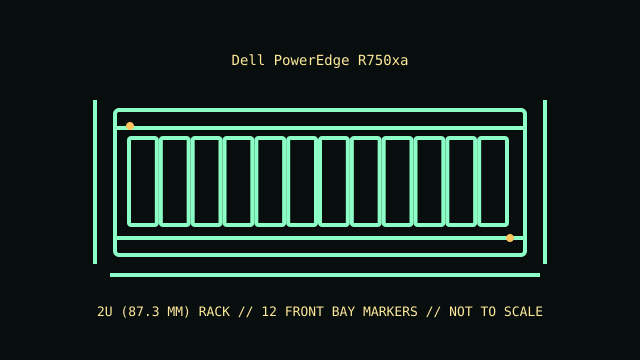

[ MODEL IDENTIFICATION // POWEREDGE R750XA // 15TH-GENERATION GPU 2U SERVER ]
Dell PowerEdge R750xa
2U (87.3 mm); 86.8 × 482 × 837.2 mm (H × W × D) chassis dimension; rail and cable-management hardware extend beyond the body. Check cabinet depth and rear exhaust clearance.

REVISION CAVEAT: Four double-width GPUs is a platform ceiling for qualified configurations, not a universal shipped build. Accelerator model, power, thermal limits, drives and risers must be checked as a matched configuration.
Specifications & fit
| Catalog subcategory | Rack server enclosures |
|---|---|
| Model / board and backplane | Dell R750xa proprietary dual-socket system board with GPU-oriented PCIe risers and front storage backplane options. Board, riser, power distribution and backplane layout are distinct from standard R750. |
| Rack height / dimensions / rails | 2U (87.3 mm); 87.3 × 482 × approximately 894 mm (H × W × D) for the deeper GPU chassis; rail, bezel and cable-management hardware extend beyond the body. Check cabinet depth and rear exhaust clearance. Dell ReadyRails sliding rails with optional cable-management arm; deep chassis requires verified rack depth, rear cable bend radius and service clearance. |
| Power supply | Redundant hot-plug AC/DC power supplies are supported, with GPU-build wattage options including 1100 W, 1400 W, 1800 W and 2000 W classes depending on configuration. Match supplies and GPU cabling to the qualified build. |
| Drive bays | Up to 8 × 2.5-inch front hot-plug SAS/SATA/NVMe bays, depending on chassis/backplane; controller and qualified GPU configuration determine supported drive interfaces and fit. |
| Expansion / risers | GPU-focused risers provide multiple PCIe Gen4 slots and support up to four double-width accelerators only in qualified combinations; verify card length, power and slot mapping in the exact build guide. |
| Cooling | High-performance, redundant hot-plug cooling designed for GPU thermal loads; required fan, shroud, GPU blank and airflow configuration depend on accelerator type. Do not operate with missing airflow parts. |
| Compatibility | R750xa-specific GPU risers, system board, GPU power cabling, thermal kit, drive backplane and high-output PSU. Standard R750 risers, GPU enablement and chassis parts are not interchangeable by name alone. |
| Revision identification | Four double-width GPUs is a platform ceiling for qualified configurations, not a universal shipped build. Accelerator model, power, thermal limits, drives and risers must be checked as a matched configuration. |
Compatibility & preservation notes
R750xa-specific GPU risers, system board, GPU power cabling, thermal kit, drive backplane and high-output PSU. Standard R750 risers, GPU enablement and chassis parts are not interchangeable by name alone.
Dell ReadyRails sliding rails with optional cable-management arm; deep chassis requires verified rack depth, rear cable bend radius and service clearance. Always use the correct lifting procedure for the complete installed unit and disconnect power before service.
- Record the full model/product number, serial label, board and backplane identifiers, installed risers, PSU labels and rail-kit part number before disassembly.
- For rack servers, verify exact generation, bay/backplane, controller, riser, fan and PSU compatibility; equal rack height does not establish parts compatibility.
- Keep drive carriers, blanks, shrouds, brackets and fasteners labeled with their original chassis and position. Measure the complete chassis, rails and cable arm before rack installation.
Manufacturer manuals & product specifications
- Dell PowerEdge R750xa Technical GuideManufacturer documentation for this exact model family; verify the machine/product number and document revision.
- Dell Support — PowerEdge R750xa manuals and documentsManufacturer documentation for this exact model family; verify the machine/product number and document revision.
Published dimensions and option maxima vary by build. Check the specific product number and measure the specimen before restoration, shipping or installation.